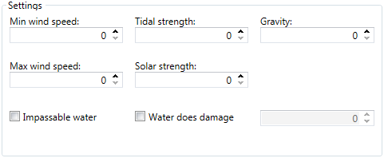

The settings fields all control how the map behaves. It contains seven fields: min wind speed, max wind speed, tidal strength, solar strength, gravity, impassible water, and water does damage.
Min & Max Wind Speed
These two settings determine the minimum and maximum speeds that the simulated wind can reach. The wind speed will
determine how much energy wind generators will produce, but the numbers used here will not directly impact the energy produced. For example, setting
both the min and max wind speeds to 2000 will mean that the map's wind will be blowing at a constant 2000 and not that the wind generators will be
generating a constant 2000 energy per tick.
Tidal & Solar Strength
Tidal strength and solar strength determine how much energy tidal and solar generators will produce respectively.
Unlike wind speed, the values set here is what the generators will actually produce in-game. For example, a tidal strength of 20 will mean that tidal
generators will produce 20 energy.
Gravity
Determines the strength of the map's gravity. Lower values mean lower gravity, which will in turn make projectiles travel further.
The value for standard gravity is 112.
Impassible Water
Simply, can the water be entered and built on? This is typically set to true for maps that feature lava.
Water Does Damage
Will the water damage units if they are touching it? Ticking the box will allow you to enter how much damage the water will
inflict on units. Typically this is used on acid map types.